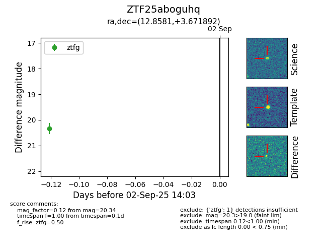

FINK: ZTF25aboguhq
Lasair: ZTF25aboguhq
ALeRCE: ZTF25aboguhq
ZTF25aboguhq (ztf,fink)
equatorial (ra, dec) = (12.8581,+3.67189)
galactic (l, b) = (122.9292,-59.19986)

last ztfg=20.19, ztfr=19.85
4 ztfg, 2 ztfr detections